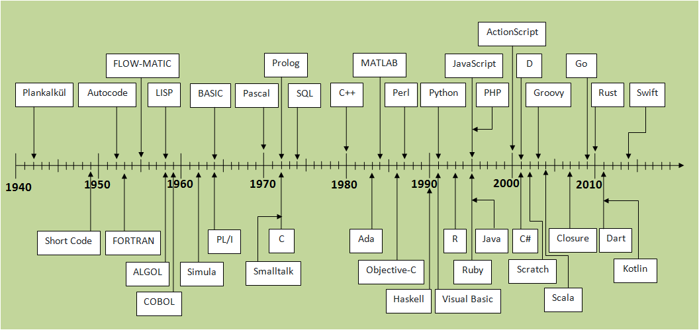

How the evolution of programming languages programmed the field of Drug Development Chemistry
The use of computers in chemistry started in the late 1950s with acceptance of Fortran as a scientific programming language. History depicts data entry, transfer and processing via suitable programs, and processed results display on a local device. In the mid 1970's, protein structure was crystallographically solved and visualized with computers for the first time. One of the large advantages was that the computer recorded atomic coordinates. And in the last few decades, the progress has been enormous. The timeline depicted here reveals how the landscape of CADD evolved and became an important part of research today. Many companies emered and so did the tools. The image below shows how the progress took place in the last few decades.
Long before the computers came into existance, programming languages were created and were being reinvented a few times. In 1843, Ada Lovelace created the very first machine algorithm. This marked the beginning of the invention of programming languages. Then in early 1940s, Konrad Zuse created the programming language that was called Plankalkul ( first high-level programming language developed for computers) assembly language and shortcode were first put into effect in 1949. Corrado Böhm in 1951 created the first high-level language. The first commercially available language was FORTRAN (FORmula TRANslation), developed in 1956 by a team led by John Backus at IBM. This also coincides with the Chemistry community started using these languages to develop the tools. The timeline below shows the development timeline in the following decades.
Role of internet in Computational Chemistry
A
Scrolling History of Computational Chemistry
Programming Languages - History
Timeline of Programming
Languages